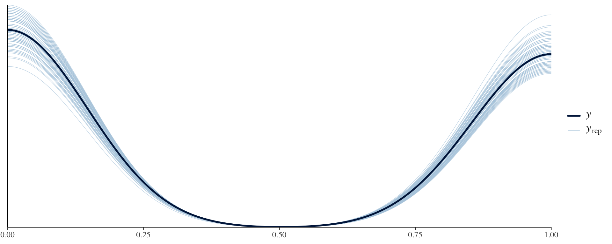

On Tuesday, we learned about classification using logistic regression.
Today, we will focus on multiclass classification: multinomial regression, ordinal regression.
Generalized linear models
Previously, we have focused on linear regression. Other forms of regression follow naturally from linear regression.
Models for binary outcomes
Suppose we have a binary outcome (e.g., \(Y = 1\) if a condition is satisfied and \(Y = 0\) if not) and predictors on a variety of scales.
If the predictors are discrete and the binary outcomes are independent, we can use the Bernoulli distribution for individual 0-1 data or the binomial distribution for grouped data that are counts of successes in each group.
Models for binary outcomes
Let’s suppose we want to model \(P(Y = 1)\).
One strategy might be to simply fit a linear regression model to the probabilities.
The Mayo Clinic conducted a trial for primary biliary cirrhosis, comparing the drug D-penicillamine vs. placebo. Patients were followed for a specified duration, and their status at the end of follow-up (whether they died) was recorded.
Researchers are interested in predicting whether a patient died based on the following variables:
ascites: whether the patient had ascites (1 = yes, 0 = no)
bilirubin: serum bilirubin in mg/dL
stage: histologic stage of disease (ordinal categorical variable with stages 1, 2, 3, and 4)
Additionally, as a probability, \(P(Y_i = 1)\) must be in the interval [0, 1], but there is nothing in the model that enforces this constraint, so that you could be estimating probabilities that are negative or that are greater than 1!
From probabilities to log-odds
Suppose the probability of an event is \(\pi\).
Then the odds that the event occurs is \(\frac{\pi}{1 - \pi}\).
Taking the (natural) log of the odds, we have the logit of \(\pi\): the log-odds:
Note that although \(\pi\) is constrained to lie between 0 and 1, the logit of \(\pi\) is unconstrained - it can be anything from \(-\infty\) to \(\infty\).
Logistic regression model
Let’s create a model for the logit of \(\pi\): \(\text{logit}(\pi_i)= \alpha + \mathbf{x}_i \boldsymbol{\beta}.\)
This is a linear model for a transformation of the outcome of interest, and is also equivalent to,
The expression on the right is called a logistic function and cannot yield a value that is negative or a value that is >1. Fitting a model of this form is known as logistic regression.
Negative logits represent probabilities less than one-half, and positive logits represent probabilities above one-half.
Interpreting parameters in logistic regression
Typically we interpret functions of parameters in logistic regression rather than the parameters themselves.
For the simple model: \(\log\left(\frac{\pi_i}{1 - \pi_i}\right) = \alpha + \beta x_{i},\) we note that the probability that \(Y_i = 1\) when \(X_i = 0\) is
Suppose that \(X\) is a binary (0/1) variable (e.g., \(X\) = 1 for males and 0 for non-males).
In this case, we interpret \(\exp(\beta)\) as the odds ratio (OR) of the response for the two possible levels of \(X\).
For \(X\) on other scales, \(\exp(\beta)\) is interpreted as the odds ratio of the response comparing two values of \(X\) one unit apart.
Why?
Interpreting parameters in logistic regression
The log odds of response for \(X = 1\) is given by \(\alpha + \beta\), and the log odds of response for \(X = 0\) is \(\alpha\).
So the odds ratio of response comparing \(X = 1\) to \(X = 0\) is given by \(\frac{\exp(\alpha + \beta)}{\exp(\alpha)} = \exp(\beta)\).
In a multivariable logistic regression model with more than one predictor, this OR is interpreted conditionally on values of other variables (i.e., controlling for them).
Bayesian logistic regression
We start with observations \(Y_i \in \{0,1\}\) for \(i = 1,\ldots,n\), where \(Y_i \stackrel{ind}{\sim} \text{Bernoulli}(\pi_i)\), \(\pi_i = P(Y_i = 1)\).
The log-odds are modeled as \(\text{logit}(\pi_i) = \alpha + \mathbf{x}_i \boldsymbol{\beta}\).
To complete the Bayesian model specification, we must place priors on \(\alpha\) and \(\boldsymbol{\beta}\).
All priors we have discussed up-to-this point apply!
Historically, this was a difficult model to fit, but can be easily implemented in Stan.
library(rstan)compiled_model <-stan_model(file ="logistic_regression.stan")fit <-sampling(compiled_model, data = stan_data)print(fit, pars =c("alpha", "beta"), probs =c(0.025, 0.5, 0.975))
Inference for Stan model: anon_model.
4 chains, each with iter=2000; warmup=1000; thin=1;
post-warmup draws per chain=1000, total post-warmup draws=4000.
mean se_mean sd 2.5% 50% 97.5% n_eff Rhat
alpha -3.35 0.04 1.21 -6.13 -3.24 -1.41 791 1
beta[1] 2.24 0.04 1.32 0.18 2.05 5.48 1252 1
beta[2] 0.38 0.00 0.08 0.24 0.38 0.54 2005 1
beta[3] 1.71 0.04 1.25 -0.34 1.59 4.55 783 1
beta[4] 2.19 0.04 1.22 0.20 2.07 4.96 806 1
beta[5] 2.61 0.04 1.23 0.59 2.48 5.46 798 1
Samples were drawn using NUTS(diag_e) at Mon Dec 30 14:36:11 2024.
For each parameter, n_eff is a crude measure of effective sample size,
and Rhat is the potential scale reduction factor on split chains (at
convergence, Rhat=1).
Convergence diagnostics
Convergence diagnostics
Back to the PBC data
Fitting a logistic regression model, we obtain
variable
mean
sd
2.5%
97.5%
alpha
intercept
-3.35
0.04
-6.13
-1.41
beta[1]
ascites
2.24
0.04
0.18
5.48
beta[2]
bilirubin
0.38
0.00
0.24
0.54
beta[3]
stage == 2
1.71
0.04
-0.34
4.55
beta[4]
stage == 3
2.19
0.04
0.20
4.96
beta[5]
stage == 4
2.61
0.04
0.59
5.46
How might we interpret these coefficients as odds ratios?
Back to the PBC data
Remember, we are interested in the probability that a patient died during follow-up (a “success”). We are predicting the log-odds of this event happening.
The posterior mean for ascites was 2.24. Thus, the odds ratio for dying is \(\exp(2.24) \approx 9.4\). That is, patients with ascites have 9.4 times the odds of dying compared to patients that do not, holding all other variables constant.
The posterior mean for bilirubin was 0.38. Thus, the odds ratio for dying for a patient with 1 additional mg/dL serum bilirubin compared to another is \(\exp(0.38) \approx 1.46\), holding all other variables constant.
The baseline stage was 1. The posterior mean for stage 3 was 2.19. Thus, patients in stage 3 have approximately 8.93 times the odds of dying compared to patients that do not, holding all other variables constant.
Predicted probabilities
There is a one-to-one relationship between \(\pi\) and \(\text{logit}(\pi)\). So, if we predict \(\text{logit}(\pi)\), we can “back-transform” to get back to a predicted probability.
For instance, suppose a patient does not have ascites, has a bilirubin level of 5 mg/dL, and is a stage 2 patient.
Posterior mean of the predicted probabilities is 0.56.
Posterior predictive checks
y_pred <- rstan::extract(fit, pars ="in_sample")$in_sampleppc_dens_overlay(stan_data$Y, y_pred[1:100, ])

Posterior predictive checks
ppc_bars(stan_data$Y, y_pred[1:100, ])
Posterior predictive checks
ppc_stat(stan_data$Y, y_pred, stat ="mean") # from bayesplotppc_stat(stan_data$Y, y_pred, stat ="sd")q025 <-function(y) quantile(y, 0.025)q975 <-function(y) quantile(y, 0.975)ppc_stat(stan_data$Y, y_pred, stat ="q025")ppc_stat(stan_data$Y, y_pred, stat ="q975")
Model comparison
Comparing our model to a baseline that removed stage.
Other transformations (also called link functions) can be used to ensure the probabilities lie in [0, 1], including the Probit (popular in Bayesian statistics).
Steps to selecting a Bayesian GLM
Identify the support of the response distribution.
Select the likelihood by picking a parametric family of distributions with this support.
Choose a link function \(g\) that transforms the range of parameters to the whole real line.
Specify a linear model on the transformed parameters.
Assume an outcome \(Y_i \in \{1,\ldots,K\}\). You can imagine running \(K\) independent binary logistic regression models, in which one outcome is chosen as a “pivot” and then the other K − 1 outcomes are separately regressed against the pivot outcome. If outcome K (the last outcome) is chosen as the pivot, the K − 1 regression equations are:
Let \(Y_i \in \{1,\ldots,K\}\) be an ordinal outcome with \(K\) categories. Then \(P(Y \leq k)\) is the cumulative probability of \(Y\) less than or equal to a specific category \(k=1,\ldots,K-1\). The odds of being less than or equal a particular category can be defined as, \[\frac{P(Y\leq k)}{P(Y > k)}\] for \(k=1,\ldots,K-1\), since \(P(Y > K) = 0\) and dividing by zero is undefined. The log odds is also known as the logit, so that \[\log \frac{P(Y\leq k)}{P(Y > k)} = \text{logit}P(Y\leq k) = \alpha_k + \mathbf{x}_i \boldsymbol{\beta}\]